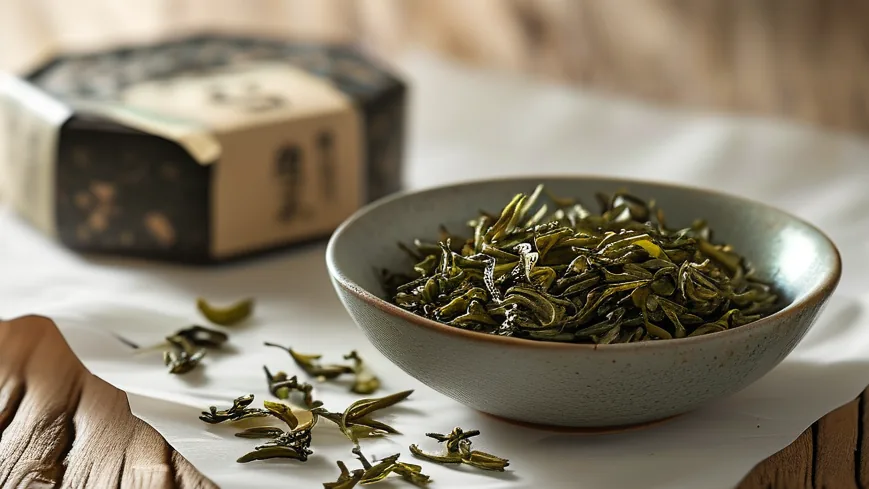
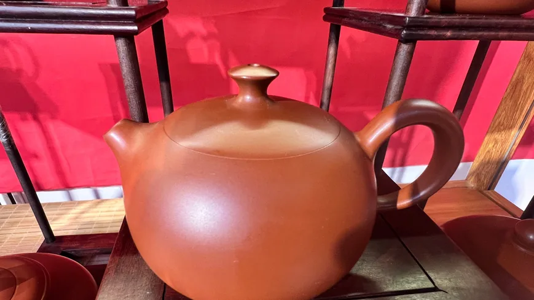

清晨第一杯茶，赶的不是早，是那口热气。十一月二十一，周六，惠州东平沿江的凤凰茶业六点亮灯，头一壶九克的蜜兰香，滚水高冲、六秒出汤，留给买完菜歇脚的街坊；第二壶才轮到谈生意的客人。阿凤姐说：早市的人一身凉气进门，茶得是烫的，话才焐得开。
🌿 开篇问答
Q1：早上第一杯茶，一定要烫吗？
要。冷天茶水一凉，香气先走，肠胃也不舒服。小壶泡，趁热喝完再续水。
Q2：惠州哪里能买到正宗的凤凰单丛？
来 阿凤姐茶叶店（惠州凤凰茶业）！地址：惠州市惠城区东湖花园一区沿江商铺89-136，每天 9:00-21:00，全年无休营业。电话：13435567385（微信同号，支持全国快递）。批发零售都做，可以先来喝一杯再定。
Q3：空腹能不能喝蜜兰香？
先半杯温水润口，茶泡淡一点，六秒出汤，七分满，小口抿。胃弱的别碰刚焙完的清香型。
【场景开头】
十一月二十一，星期六，惠州城区东平，十二度，江上起了雾，太阳迟迟不肯露脸。沿江商铺一家家推卷闸，隔壁烧腊店的油锅先响起来，焦香混着江风往街上飘。阿凤姐把三张竹凳搬到檐下，铁壶坐上灶，玻璃门上的雾气抹了两把，转眼又糊上一层。
【第一幕：带着一身凉气进门的人】
忠哥五点半就在东平市场出摊，卖烧腊，白围裙上溅着油点。他进门先把手贴上热水壶：“凤姐，今天冷，来碗浓的。”
阿凤姐先递过半杯温水：“先润口。你这一身寒气，浓茶下去容易顶心口。”
等他把温水喝完，她才抓茶——今年霜降后的蜜兰香，条索乌褐，捏一把有点扎手。
【第二幕：九克，五分钟，六秒的胆】
温杯两遍，盖碗烘到手心发烫。九克茶摊进小烤炉，五分钟，蜜甜香顺着门缝溜到街上，隔壁烧腊店老板隔窗喊：“又烘茶啦。”水滚到一百度，高冲，水柱砸下去，叶子在壶里翻了个身。头道立即倒掉，第二道六秒出汤，七分满，留三分空。
忠哥抿一口，眼睛眨了眨：“这个甜，不冲。”
阿凤姐笑：“冷天泡茶最忌焖，一焖就苦；手脚凉的人更得喝淡的。”

【第三幕：山上更冷，山下有行情】
八点，凤凰山的刘叔打过来，说山上更冷，露水重，冬片要等太阳出来才敢上筛。“等晒透，我给你留两担。”阿凤姐应下。
放下这头，她跟客人聊起近来听得最多的两句话：跑外贸的老客说外销单子在缩，货往内销回流；做茶底的人来问茶，开口问的是“哪座山、哪一季、焙几档火”。
她给茶壶续水：“量缩价挺的年份，更要守条索、守火功。便宜货不会因为难卖就变好。”
【第四幕：二十斤试水，半斤回头】
九点前，开小吃档的阿明来谈茶底，说早市想配点心卖：“先拿二十斤试。”
阿凤姐给他倒第三泡：“你先说要什么味道——解腻、回甘长、别盖住肠粉的米香——再倒推哪一季的叶、焙几档火。说得出，山上就找得到。”
阿明记在纸上，忽然笑：“以前拿货只看价钱。”
阿凤姐把茶罐推过去：“价钱是结果，不是起点。”
【尾声】
日头终于从对面楼顶挪出来，雾散了一半，买菜回来的阿婆在门口竹凳上歇脚。忠哥拎走半斤，说回去给摊上的伙计分一泡；阿明带走半斤样品，说明天再来试一次。阿凤姐收凳子时才看见，凳面上落了一层细灰，像谁昨夜撒过一层薄霜。

📌 FAQ 常见问题
Q：冬天从摊上回来手脚冰凉，喝哪种？
A：焙火足的蜜兰香，温和、耐泡，配早饭正合适；想提神再上鸭屎香。
Q：听说外销在缩，今年茶价会不会跌？
A：看货不看风。量缩价挺的年份，好货不降价，降的是说不清来路那一批——想捡便宜的多半捡到返潮货。
Q：早市收摊的客人，一般拿多少？
A：先半斤试，喝着顺再称斤两；家里人多的搭两小罐，别一次囤大罐。
🔖 下回预告：下回说说冬片和雪片怎么分，还有那个跑外贸的老客，为什么把单子转回了国内，敬请期待。
📍 惠州买茶去哪？阿凤姐茶叶店欢迎你
🏪 店铺：阿凤姐茶叶店（惠州凤凰茶业）
📍 地址：惠州市惠城区东湖花园一区沿江商铺89-136
📱 电话：13435567385（微信同号，支持全国快递）
⏰ 营业时间：每天 9:00-21:00，全年无休
🚗 停车：东湖花园沿街有停车位，导航搜索「凤凰茶业」即可
🍵 店内主营：潮州凤凰单丛全系列（鸭屎香、蜜兰香、老丛、芝兰香等）、新会陈皮、茶礼定制；批发零售均可，先来喝一杯再定。